生成式學習
Table of Contents

1. 生成式學習
1.1. 生成是一件複雜的事
1.2. 生成式AI的發展與演進
1.2.1. 早期的文字生成與對話模型
1.2.2. 從規則系統到統計方法
規則式翻譯
以條件判斷來處理自然語言翻譯，容易出現如下結果：
Can you feel my world? / 罐頭您了解我的世界嗎？
統計式翻譯
IBM於1990 年代提出了基於統計式機器翻譯（Statistical Machine Translation, SMT），這種方法使用雙語對照資料庫 來學習來源語言和目標語言之間的對應關係，利用機率的計算進行翻譯選擇。例如資料庫中有以下的語言對應關係：
- 「I want a coffee」對應「我想要一杯咖啡」
- 「Can I get a sandwich」對應「我可以點個三明治嗎」
電腦會從這些雙語句子中找出「I」通常對應「我」，「want」對應「想要」…「sandwich」對應「三明治」這些對應關係。
1.2.3. 機器學習的興起
- 語言是有順序關係的，每一個詞的意思通常會受到前後詞語的影響。因此，處理語言、語音這類有時序關係的資料時，我們需要一種能夠記住先前資訊的模型來協助理解整體上下文。
- 循環神經網路（Recurrent Neural Network, RNN）的出現解決了這一問題，不同於CNN只專注處理當前的資料（例如擷取某張影像的特徵），RNN能夠將先前輸入的資料一併傳遞到當前的分析步驟中，使模型能「記住」先前的輸入，因此更適合處理文章、語音等時間序列資料。
RNN

Figure 1: RNN的運作原理
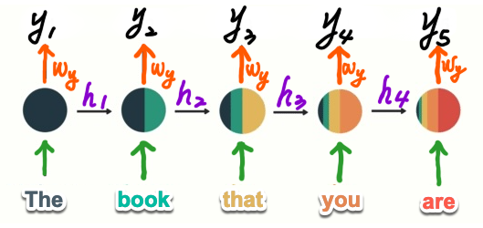
Figure 2: RNN模型架構
- RNN 也存在一定的限制，在處理較長的句子或序列時，RNN 容易出現「長期依賴問題」，即模型會逐漸「遺忘」先前的資訊，導致上下文理解不完整。這使得 RNN 難以處理長篇的文本或長時間的語音。
- 為了解決 RNN 的長期依賴問題，長短期記憶網路（Long Short-Term Memory, LSTM） 應運而生
1.2.4. 從文字生成到影像生成
- 由 Ian Goodfellow 及其團隊於 2014 年提出的生成對抗網路（Generative Adversarial Networks, ） 是生成式AI領域的另一個重要里程碑，生成對抗網路一問世便在影像生成領域引發了廣泛的關注，成為生成式AI的核心技術之一。
GAN

Figure 3: GAN模型架構
- thispersondoesnotexist
1.2.5. 從影像生成到影像理解
- 2014年，Google開發了一個名為Show and Tell（如圖 1.2 5）的影像理解模型，這是一個能夠為照片生成簡單文字描述（Image Captioning）的系統， Show and Tell展示了人工智慧「看懂」一張照片的能力，
Show and Tell
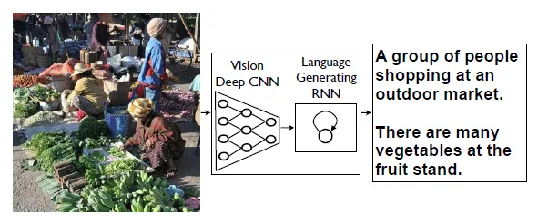
Figure 4: Show and Tell模型架構
1.2.6. Transformer 架構的突破
Transformer 的自注意力機制具備了下列兩項優勢：
- 全局關聯：自注意力機制讓模型在處理句子中的每個詞時，可以同時參考其他所有詞語的資訊，這樣即使上文文章開頭的「賈伯斯」、「離開蘋果」與文末的「他」、「回到蘋果」之間距離較遠，自注意力機制仍能輕鬆找到這種關聯，從而理解「他」指的就是「賈伯斯」，也能對賈伯斯的整個行動脈絡有所掌握，知道他曾離開，後來又回到蘋果。如果使用RNN 或 LSTM，在處理到文末的「他再次回到蘋果」時，文章開頭的「賈伯斯」與「離開蘋果」可能已被模型遺忘。
平行處理：自注意力機制允許 Transformer 同時處理句子中的所有詞語，這比 RNN 和 LSTM 的逐句循序處理要快很多，每個詞都能同時接收來自其他詞的資訊，大幅提高了處理效率。
How a transformer models work:2
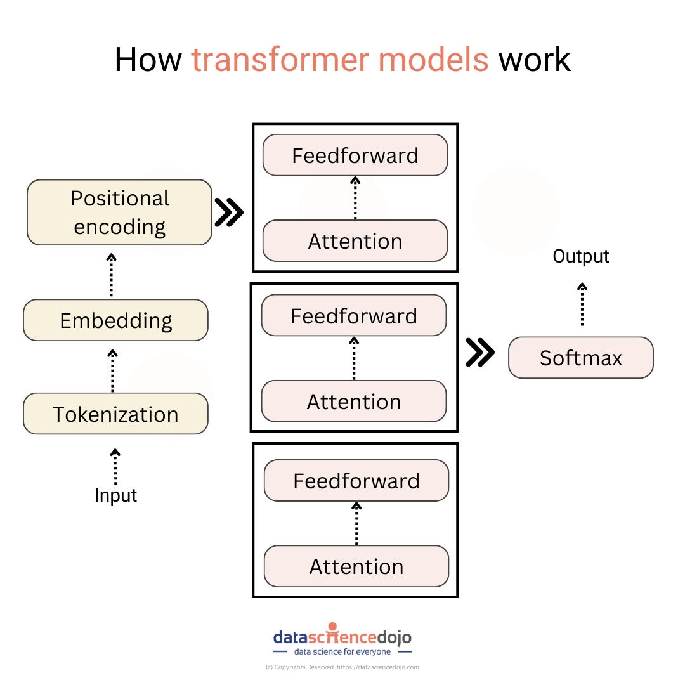
Figure 5: Transformer Model
1.2.7. 大語言模型與多模態生成時代
- 2019年2月，OpenAI發布了第二代的語言模型產品GPT-2，該模型具有15億個參數
- 2020年推出具有1750億個參數的GPT-3 ，至此，生成式AI正式進入了大語言模型（Large Language Model, LLM）時代
1.3. 生成式AI的類型與應用
1.3.1. 類型
- 文字生成
- 影像生成
- 程式生成
- GitHub Copilot
- Colab + Gemini
- GitHub Copilot
- 其他模態生成
1.3.2. 應用
- 教育: 自主學習、筆記、語言學習、教師備課、評量
- 媒體/內容生成
- 商業：貼文、廣告、客服
2. 生成式AI的基礎概念
生成式AI的核心概念就是「生成」，它能夠根據輸入的提示（prompt）或條件，創造出新的內容，如文字、影像、音訊等。這些生成的內容可以是全新的創作，也可以是對現有資料的改編或擴展。
那麼，AI是如何「生成」這些內容的呢？這就涉及到幾個關鍵的技術與概念，包括模型訓練、資料表示、編碼與解碼等。
我們先來回顧一些基礎概念，這些概念將有助於理解生成式AI的運作原理。
2.1. 回顧關於模型訓練的概念
我們以一個實際的例子來說明：如何從學長姐的成績資料中，建立一個預測模型，根據平時考試成績預測學期總成績。這個任務可以視為一個模型訓練問題。
2.1.1. 以函數參數尋找最佳模型
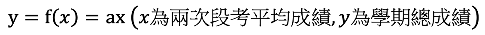
- 蒐集歷屆學長姐的成績資料（包括兩次段考平均成績與學期總成績），這些資料稱之為訓練資料（training data）
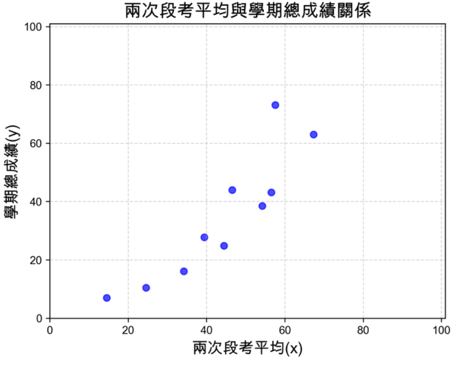
- 將訓練資料視覺化, 初步猜測二者可能存在線性關係
- 接下來的任務就是畫出一條能儘量接近圖上所有資料點的線，也就是找出最佳的參數 a（即這條迴歸線的斜率）
首先在斜率的合理範圍內隨機指定一個a值 （假設隨機生成值為0.5）
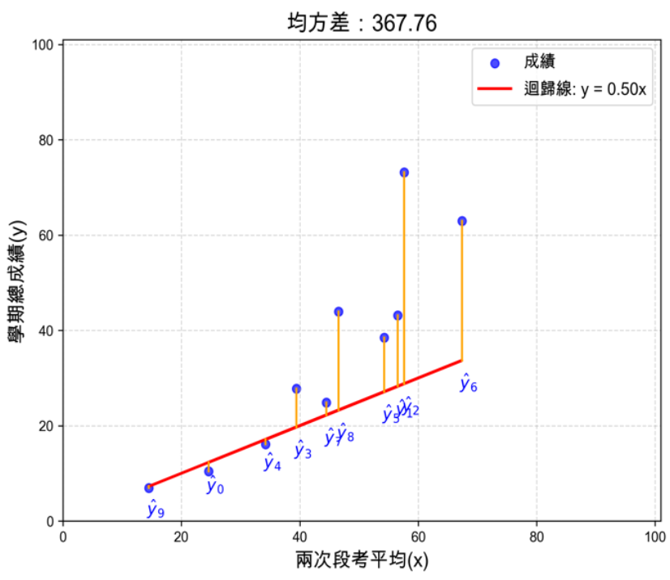
- 有了這條線，我們就可以計算出這10筆資料與這條線的距離。理想狀況下我們希望每個點都離迴歸線越近越好，此處以均方差（Mean Squared Error, MSE）來計算誤差
\[ MSE=\frac{1}{n} \sum_{i=1}^{n}(y_i-\hat{y_i})^2 \]
，這裡的MSE就是這個模型的損失函數（Loss Function） 當我們把全部合理的 a 值（如0.3≤a≤1.4）對應的損失函數逐一計算出來後，就可以將這些結果畫成一條如圖 2.2 4的曲線，這就是這個模型的損失函數曲線（Loss Function Curve）
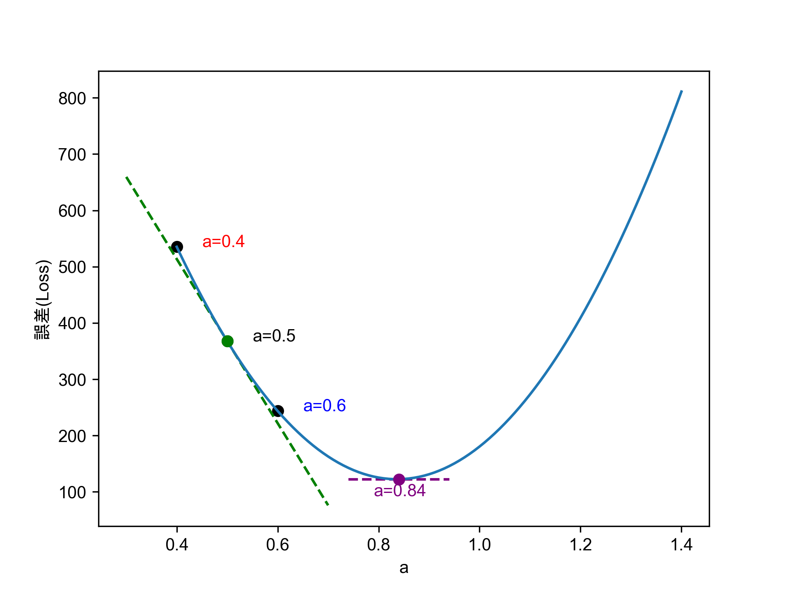
只要將 a 逐步往損失函數較小的方向調整，這個模型的預測效果就會更好。另一種調整 a 值的方式是透過資料點在曲線上的切線（圖中綠色虛線）斜率來判斷該往左或右移動 a 值，直到找到切線斜率為 0 的點，這便是曲線的最低點，也是最佳 a 值。
如果老師的計分是針對期中期末考給予不同權重呢？那我們新的目標函數就要改成如下式子，此時的任務在求出最佳的參數 a, b。
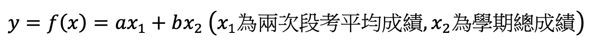
2.1.2. 利用梯度下降法與損失函數（如 MSE）來優化模型
2.1.3. 神經網路的概念與其參數調整方式
2.2. 探討活動 1
- Python 任務
- 比較不同類型的種損失函數、繪製損失函數曲線
- 設計一個函數來量化模型的準確性
- 比較不同類型的種損失函數、繪製損失函數曲線
2.3. 探討活動 2
- 測試不同的中英文輸入，分析 Token 的劃分方式
- 比較 GPT-3 和 GPT-4 的 Token 分割方式
2.4. 文字、圖形與向量：先理解才能生成
- AI模型如何理解影像資料
- AI模型如何理解文字資料
2.5. 探討活動 3
- 以 Python 撰寫卷積核程式，分析影像特徵擷取
2.6. 探討活動 4
- 文字轉換向量的實作與探究
2.7. 編碼與解碼：邁向生成的一小步
- 簡介自動編碼器運作原理
- 簡介自動編碼器的應用
2.8. 探討活動 5
- 體驗 VAE（變分自動編碼器）的影像漸變
- 設計並測試不同數字間的影像漸變
3. 模型為何有推理能力？
為何模型能推理 / Why can models reason?
至此為止，我們應該有了一個基本的概念：AI模型的一切產出均是基於訓練資料的統計關係，也就是基於機率分佈來進行預測與生成的。我們似乎也能由數學的角度來理解這些模型的運作原理。
但OpenAI於2025年8月份推出了GPT-5以及GPT-5-thinking模型，這兩個模型聲稱具備「推理」能力，能夠解決一些需要邏輯推理的問題，例如數學題、邏輯謎題等。事實上，早在2023年9月份OpenAI推出的o1(OpenAI Reasoning Engine)就標榜了「能夠在答案背後進行推理、並生成中間思考步驟」，它和 GPT-4、GPT-3.5 最大的不同，在於設計上加入了「深度推理」的機制。
為什麼一個只是基於機率分佈的模型能夠進行推理？
3.1. 如何訓練出一個有推理能力的模型？
首先，語言模型的確是「下一個 token 機率分佈」的取樣器，數學上並沒有「邏輯引擎」。但我們日常所說的話、所寫的文字其實都包含了大量的推理鏈 (reasoning chains) 與邏輯模式（這裡不包括一些言不及義的廢話）。模型就透過訓練，學會了「哪些上下文常常導出哪些結論」。例如數學題、程式碼、辯論文字這些資料中的*規律*其實就是推理步驟的樣本。
當模型內部層數夠深、參數夠多時，它就不只能「模仿字串」，而是能捕捉抽象規律並在生成時重組，模型所表現出的外在行為就是「能推理」的表象。換句話說：推理不是模型「天生的演算法」，而是從大量資料中學會了模仿與壓縮推理模式。
所以，真正讓模型具備推理能力的關鍵在於
- 架構調整：像 OpenAI 的 o1 / o3 / GPT-5-thinking，會讓模型在內部「思考多步」再輸出答案（類似 chain-of-thought）。
- 訓練方式：給模型更多「逐步解題」的數據，或使用 RLHF 讓它傾向於展現推理過程。
- 解碼策略：例如 Tree-of-Thought、Self-consistency sampling，都是在輸出階段加強推理品質的技巧。
3.2. 一般（非推理）的模型就沒有推理能力嗎？
在 GPT-3 剛出來的時候，研究者發現：
- 如果直接問它數學題或邏輯題 → 答得很差。
- 但是，如果在 prompt 裡先示範「逐步推理」的範例，它就能照著模仿，表現大幅提升（這就是 few-shot CoT prompting）。
這裡的CoT指的是「Chain of Thought」，也就是「思考鏈」的意思。這種方法讓模型在生成答案前，先模擬人類的思考過程，逐步推導出結論。CoT 就是讓模型在給出最終答案之前，先生成一連串「中間推理步驟」。
在沒有CoT的狀況下，如果我們直接問模型一個問題，它可能會直接給出如下答案
Q: 我有 3 顆蘋果，爸爸比我多 2 顆，我們共有幾顆？
A: 5
但如果我們使用 CoT，讓模型先思考過程，它可能會這樣回答：
Q: 我有 3 顆蘋果，爸爸比我多 2 顆，我們共有幾顆？
A: 我有 3 顆，爸爸有 3+2=5 顆，3+5=8 → 總共有 8 顆。
上面答案中「先算爸爸幾顆，再相加」的過程，就是 CoT。也就是說，如果我們在問模型問題時，在 prompt 裡告訴模型「請逐步思考」或給它範例，讓它自動展開思維鏈，模型就能模仿「逐步解題」的格式，進而提升答案的正確性。
如此看來，「模型本身沒有推理能力，只是會模仿文字模式。」這樣的描述是不是過於保守？如果模型沒有推理能力，那prompt再如何引導也沒有用吧？你怎麼能引導出不存在的能力？有沒有可能是「模型本身就具備了某種推理能力，但需要透過適當的提示來激發」？
3.3. Chain-of-Thought Reasoning Without Prompting
Xuezhi Wang與Danny Zhou在2024年提出了一篇有趣的論文《Chain-of-Thought Reasoning Without Prompting》，在這篇論文中，作者挑戰了「CoT 只是模仿」的觀點，並提出了「模型本身就具備推理能力」的證據。
Our findings reveal that, intriguingly, CoT reasoning paths can be elicited from pre-trained LLMs by simply altering the decoding process.
這篇論文對於「推理」的定義為：模型在輸入（問題）和最終輸出（答案）之間生成的所有中間步驟。

Figure 6: LLM的推理
為了驗證這個觀點，作者設計了一個實驗：

Figure 7: CoT-decoding：傳統LLM已具備推理能力
在這個實驗中，模型看到了「3 apples」、「2 more apples」、「in total」這些關鍵詞，然後就依據Greedy Decoding策略（輸出可能性最高的生成內容）生成了「5」為第一個輸出，再輸出 apples」結束。但如果我們分析模型在第一次生成時的機率分佈，會發現除了「5」，模型還有可能會出現「I」、「We」、「You」、「The」。當我們進一步將前五個可能的輸出依序生成答案，就會發現其實正確答案已經隱含在模型的其他生成可能中：
- I have 3 apples, my dad has 2 more apples than me, so he has 5 apples. 3+5=8
- We have 8 apples in total.
- You have 3 apples, your dad has 2 more apples than you, so he has 5 apples. 3+5=8
- The answer is 5.
由這個實驗看來，正確的答案其實是隱藏在模型中，只是他像省道旁的縣道，如果你只沿著省道走（Greedydecoding），自然看不到縣道盡頭的風景。而模型預設的貪婪解碼策略就像是沿著省道走，永遠選擇機率最高的路徑，這樣就錯過了其他可能的路徑。
除了Greedy decoding，模型其實還有其他解碼策略，例如
- Temperature sampling: 透過調整溫度參數，讓模型在生成時更具多樣性，避免總是選擇機率最高的詞語。
- Top-k sampling: 限制模型只能從機率最高的 k 個詞語中選擇，增加生成的多樣性，也許第二高、甚至第五高也可能出現。。
- Nucleus (top-p) sampling: 根據累積機率選擇詞語，在累積機率到 p（例如 0.9）之內的候選集中抽樣確保生成內容的多樣性和合理性。
- Beam search: 同時探索多條生成路徑，選擇最有可能的答案。
3.4. 生成的溫度
將來大家在建立生成模型時，大概都會遇到這樣一個參數：Temperature（ 模型還有溫度？會發燒嗎 ）

Figure 8: Google AI Studio的溫度設定
Temperature 參數控制了模型生成內容的隨機性與多樣性。溫度越高，生成的內容越多樣化，但也可能越不合理；溫度越低，生成的內容越保守，但也可能越重複。具體來說：
- 低 temperature (≈0–0.3)：輸出更接近最高機率的 token，結果穩定但缺乏多樣性。
- 高 temperature (≈0.8–1.2)：更多隨機性，有創意但也更可能胡亂。
從推理的角度來看，溫度不會直接「賦予推理能力」，因為推理模式存在於模型的權重與訓練。但若 temperature 太低，則會偏向「最可能的套路」，雖然有時能提升數學/邏輯題的正確率，但是從這個例子來看，也有可能因為略過了中間步驟而導致錯誤答案。
Open AI 的ChatGPT預設溫度為13。

Figure 9: Caption
4. 自然語言生成
4.1. AI 的本質：函數
- 人工智慧本質上就是在找出一個特定函數。
成績預測
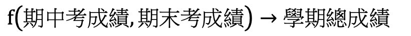
- 期末成績= 0.4 × 期中考成績 + 0.6 × 期末考成績
- 期末成績= 0.4 × 期中考成績 + 0.6 × 期末考成績
影像辨識
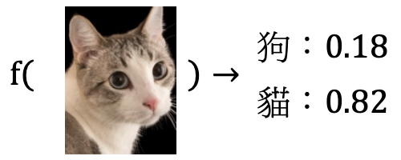
語音辨識
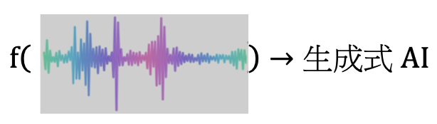
五子棋
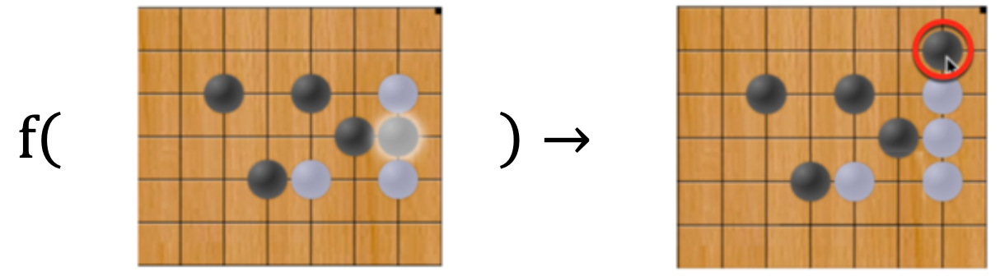
文字生成
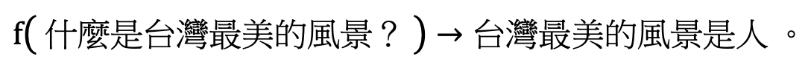
影像生成
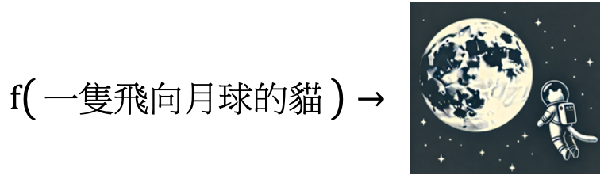
4.2. 生成式 AI： 一種會接龍的函數
f( 什麼是台灣最美的風景？ )→台灣最美的風景是人 。
- 簡介文字生成的接龍機制
- Token 概念 與不同 GPT 版本的 token 處理方式
- 自迴歸模型 (AR) 與非自迴歸模型 (NAR) 比較
4.3. 見樹也見林：從單詞到全句
- 探討 NLP 如何理解句子與文件
- 簡介BoW、TF-IDF、N-Gram
4.4. 探討活動 1
- 以實作體驗BoW、TF-IDF的運作並分析結果
4.5. RNN/LSTM：時間序列資料的解決方案
- 簡介RNN，LSTM、GRU運作原理
4.6. 探討活動 2
- 比較 RNN、LSTM、GRU 的結構與應用
4.7. 注意力機制與 Transformer
- 簡介Seq2Seq 模型
- 簡介Transformer及自注意力機制
4.8. 探討活動 3
- 實作以 Transformer 進行文字翻譯
- 觀察並解釋程式生成之注意力矩陣
4.9. 從 LM 到 LLM
- 簡介LM與LLM
- 介紹幾種常見的LLM
4.10. 探討活動 4
- 搜尋並介紹一款 LLM
4.11. 語言模型的訓練與微調
- 介紹語言模型的建置、訓練與微調
4.12. 探討活動 5
- 訓練一個簡單的語言模型
5. 影像與多模態生成
5.1. 影像與多模態生成概述
- 簡介 AI 在影像與影片生成的發展
- 介紹不同類型的多模態生成
- 文字生成影像、文字生成影片（Text-to-Image / Text-to-Video）
- 影像生成文字、影片生成文字（Image-to-Text / Video-to-Text）
- 影像生成影像、影片生成影片（Image-to-Image / Video-to-Video）
- 文字生成影像、文字生成影片（Text-to-Image / Text-to-Video）
5.2. 探討活動 1
- 選擇兩種多模態生成技術
- 比較不同工具的生成品質與操作便利性
5.3. VAE：生成模型的開端
- 變分自動編碼器（VAE）的概念與原理
- 應用VAE進行風格轉換與圖片漸變
5.4. 探討活動 2
- 使用 VAE 進行圖片風格轉換
- 測試不同的 潛在向量（Latent Code） 設定，分析結果
5.5. GAN：在對抗中學習
- 介紹 生成對抗網路（GAN） 的概念
- GAN 在 圖片生成、風格轉換、Deepfake 等領域的應用
5.6. 探討活動 3
- 訓練一個簡單的 GAN 來生成手寫數字
- 體驗 GAN 風格轉換，將照片轉換為卡通風格
5.7. Diffusion Models：擴散模型的崛起
- 介紹擴散模型（Diffusion Models）的原理
- 介紹幾種代表性的擴散模型應用
5.8. 探討活動 4
- 嘗試不同的提示詞（Prompt），比較生成結果
- 利用Gradio 或 Streamlit實作一個簡單的文生圖介面
5.9. 從單模態到多模態生成
- 簡介多模態生成（Multimodal Generation）的概念
- 介紹 CLIP、Sora、ViT（Vision Transformer） 的應用
5.10. 探討活動 5
- 使用 CLIP 進行圖文匹配
- 嘗試以 Sora 生成短影片
- 討論多模態 AI 的應用與未來發展
6. 生成式 AI 的相關議題
6.1. 法律議題
- 探討生成式 AI 在法律層面的影響
- 探討生成式AI主要法律爭議
6.2. 探討活動 1
- 討論兩起生成式 AI 相關的判決案例
- 分析 AI 生成內容的法律地位與影響
6.3. 倫理議題
- 討論生成式 AI 可能引發的倫理問題：
6.4. 探討活動 2
- 測試不同 AI 聊天機器人的倫理邊界
- 討論如何設計更符合倫理規範的 AI
6.5. 教育議題
- 探討生成式 AI 對學校教育的影響
- 討論 AI 在學習輔助與評量中的角色
6.6. 探討活動 3
- 一組使用 AI 撰寫報告，另一組傳統方式撰寫
- 實驗比較「有/無以AI輔助學習」在學習內容完整性與學習體驗上的差異
6.7. 其他議題
- 環保議題：生成式 AI 的電力與水資源消耗
- 壟斷與反壟斷：科技巨頭如何主導 AI 發展
- 就業市場影響：AI 取代與創造的新職業
- 國防與安全風險：AI 在戰爭與資訊戰中的應用
6.8. 探討活動 4
- 計算、分析個人 AI 使用的電力消耗
- 討論 AI 節能技術與環保策略
6.9. 探討活動 5
- 列舉 AI 可能取代的職業、可能創造的新職業
- 制定 AI 時代的職業發展策略
7. Resource
8. 生成式AI工具列表
目前生成式 AI 的平台或 App 已進入百家爭鳴的戰國時代，各大科技公司與新創團隊紛紛推出具備文本、影像、語音、影片、程式碼等多模態生成能力的應用，從日常寫作輔助、創作設計、程式開發、學習筆記到企業文件自動化等，都能見到這類工具的蹤影。以下整理目前市面上較具代表性的生成式 AI 工具，依照用途分類，方便讀者快速掌握各類工具的功能特色與應用場景：
| 類型 | 平台 / App | 特色簡介 | LINK |
|---|---|---|---|
| 文字生成 | ChatGPT | 支援多模態輸入、強大的自然語言處理能力、可擴充插件功能 | chat.openai.com |
| Claude | 重視倫理與安全性，擅長長篇文本處理與資料隱私保護 | claude.ai | |
| Gemini | 整合搜尋功能、查證機制與Google應用系統整合 | gemini.google.com | |
| Copilot（文字） | 整合Bing與Office 365，支援文件自動生成 | copilot.microsoft.com | |
| Notion AI | 文件整理與筆記輔助，適合日常工作與學習 | www.notion.so/product/ai | |
| NotebookLM | 筆記助理，能針對個人上傳文件內容進行摘要、問答與重組 | ||
| 影像生成 | DALL·E | 已整合至ChatGPT，可由文字生成圖像 | openai.com/dall-e |
| Midjourney | 高質感藝術風格圖像生成，適合創意應用 | www.midjourney.com | |
| Adobe Firefly | 整合Photoshop / Illustrator，支援商業設計 | www.adobe.com/sensei/generative-ai/firefly.html | |
| Tensor Art | 開源圖像生成平台，支援社群模型與風格多樣化輸出 | tensor.art | |
| Stable Diffusion | 開放原始碼，可本地運行，保護資料隱私 | stability.ai/products/stable-diffusion | |
| 程式碼生成 | GitHub Copilot | 主打程式碼補全、轉換與註解生成 | github.com/features/copilot |
| Replit Ghostwriter | 線上即時程式建議，適合初學者與快速開發 | replit.com/site/ghostwriter | |
| Tabnine | 基於開源模型，可離線使用，注重開發效率 | www.tabnine.com | |
| 語音/音樂生成 | Suno AI | 可由文字生成歌曲，支援音樂風格多樣化 | suno.ai |
| ElevenLabs | 高真實度語音生成，支援多語言與語音克隆 | elevenlabs.io | |
| Hedra AI | 利用靜態照片+文字生成擬真人聲與嘴型 | hedra.ai | |
| 影片生成 | Runway | 影片生成與編輯平台，支援風格模擬與擬真影片生成 | runwayml.com |
| Pika | 提供簡易操作的AI影片創作工具 | pika.art | |
| Vidnos | 提供即時影片生成與動畫工具，支援社群媒體導向創作 | vidnoz.com | |
| Genmo | 互動式影片生成平台，結合文字敘述與動畫創作 | genmo.ai | |
| 簡報 / 圖表生成 | Gamma | 輸入摘要自動生成簡報，支援設計風格多樣 | gamma.app |
| Mapify | 文件 / 影片自動轉為心智圖，幫助視覺化整理 | mapify.ai | |
| Napkin | 快速生成具設計感的資訊圖表與筆記結構 | napkin.one | |
| AI代理人 | OpenAI GPTs | 可自訂任務角色、工具與行為，建構專屬AI助理 | openai.com/gpts |
| Poe | 整合多種AI模型（如GPT、Claude、Gemini）於單一平台 | poe.com | |
| Google AI Studio | 提供LLM模型測試、部署與整合介面，支援Gemini模型開發 | ai.google.dev |